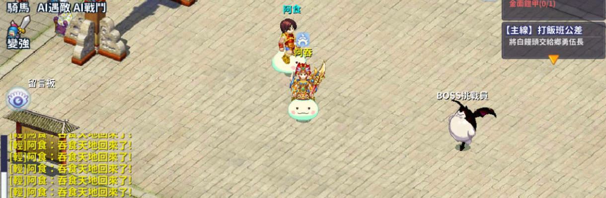

Trước đây rất lâu, khi mà tuổi của thế giới này còn rất rất trẻ, cụ thể trước bao lâu, không ai có thể khẳng định. Từ lúc vũ trụ còn sơ khai, trên địa cầu vừa mới bắt đầu thời đại của sự sống cao cấp. Lúc ấy, trên địa cầu này có vài loại chủng tộc cư trú, chủng tộc người trên thế giới lúc ấy hoàn toàn bất đồng với văn minh hiện tại của nhân loại. Bọn họ không có khoa học kỹ thuật, nhưng lại có pháp thuật thần kỳ - đó là một thời đại thần thoại. Sau đó, khi mà văn minh của họ phát triển tới một cảnh giới cao nhất, bọn họ cũng đã đủ năng lực, có thể đả thông không gian, đi đến một không gian khác "TIÊN GIỚI". Những sinh mạng ở trên Tiên Giới được gọi là "Thần Linh"
Điều này vốn là một chuyện rất tốt, bởi vì sau khi phát hiện ra thế giới mới, ít nhất các chủng tộc sẽ không cần phải đấu đến ngươi chết ta sống trên thế giới bị giới hạn này. Vì vậy các chủng tộc đều dùng thần lực thần kỳ của mình, mở mang không gian mới cho riêng mình. Bọn họ đều mong muốn mở rộng lãnh thổ mới của mình. Thế nhưng bọn họ nhanh chóng phát hiện ra một vấn đề... Họ căn bản không có đủ khả năng. Bởi vì dù dùng thần lực đả thông không gian mới, nhưng để duy trì không gian đó nhất thiết cũng phải có đủ thần lực, năng lượng phải duy trì liên tục không dứt, nếu không, không gian đó sẽ suy sụp, thậm chí biến mất.
"Thần Linh" có chết không? Có, thần linh cũng có tuổi thọ. Khi tuổi thọ hết đi là lúc thần linh ngã xuống, thần lực để duy trì "Tiên Giới" ngày càng cạn kiệt. Khi tình hình càng ngày càng nguy cấp, các thần linh quyết định hạ phàm xuống "Nhân Giới". Thần Linh truyền thụ cho Nhân Loại các phương pháp tu luyện mà khiến cho một số người bình thường có thể tu luyện thành tiên, bổ sung cho những thần linh ngã xuống. Thậm chí một số sinh vật không phải loài người cũng có thể tu luyện thành tiên - "Tôn Ngộ Không".
Nam Đẩu Tinh Quân và Bắc Đẩu Tinh Quân dùng đến pháp thuật cấm kỵ, đi xuyên qua thời gian, để đem đến những Nhân loại có tiềm lực tốt trở về thời kỳ loạn Tam Quốc tu luyện. Vũ trụ Tam Quốc - Vũ trụ Tam Giới - thời kỳ loạn giới Tiên-Nhân-Ma.
Nộp CV cho 2 vị thần ngay